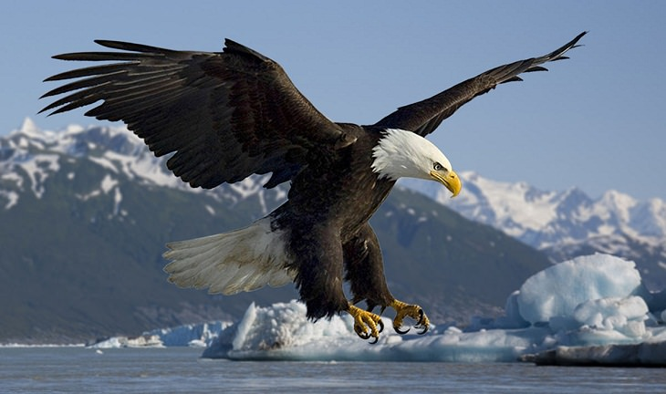
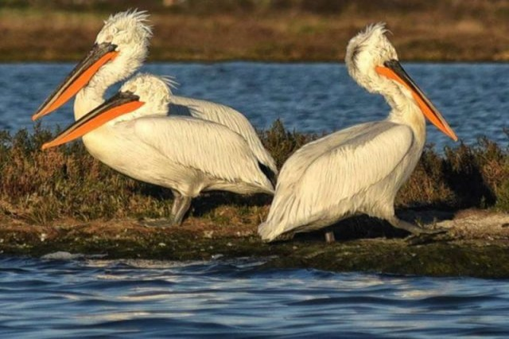
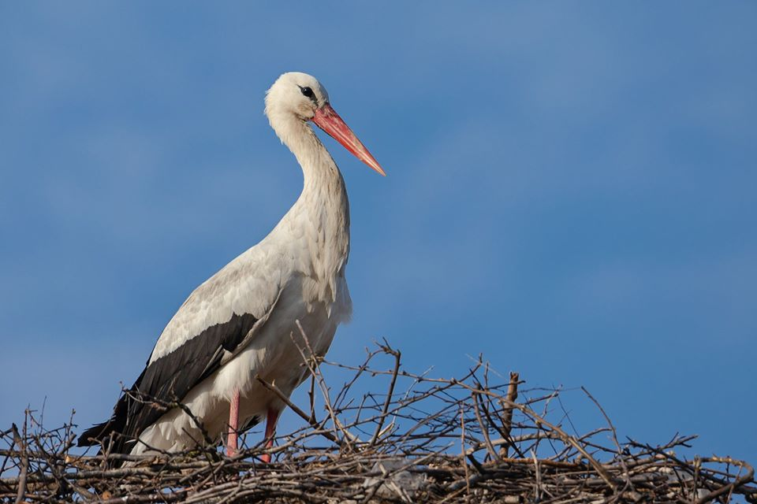

Shpendët
Shpendët janë një nga grupet më të njohura të kafshëve dhe dallohen për pendët, krahët dhe aftësinë për të fluturuar. Shqipëria ka një larmi të madhe shpendësh për shkak të relievit të saj, lagunave, liqeneve, maleve dhe zonave bregdetare.
Disa nga shpendët më të njohur në Shqipëri janë shqiponja, pelikani kaçurrel dhe lejleku. Këto specie janë pjesë e rëndësishme e natyrës sonë dhe kanë rol të veçantë në ekosistemet ku jetojnë.

Shqiponja
Një shpend grabitqar i fuqishëm dhe simbol shumë i njohur kombëtar.

Pelikani Kaçurrel
Një nga shpendët më të veçantë të zonave ujore dhe lagunore në Shqipëri.

Lejleku
Një shpend i njohur për praninë e tij në fusha, fshatra dhe zona të hapura.